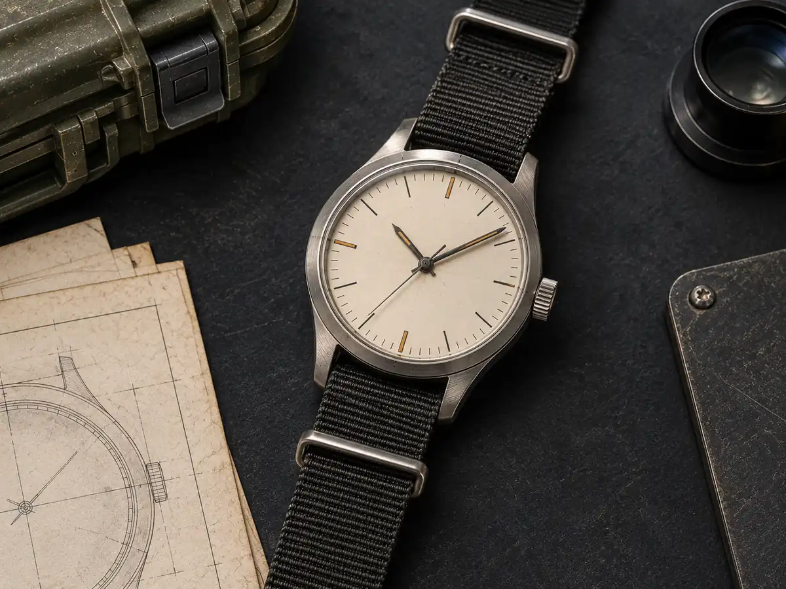
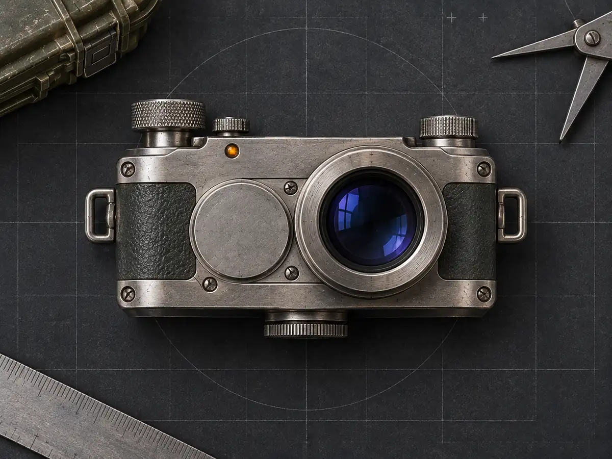
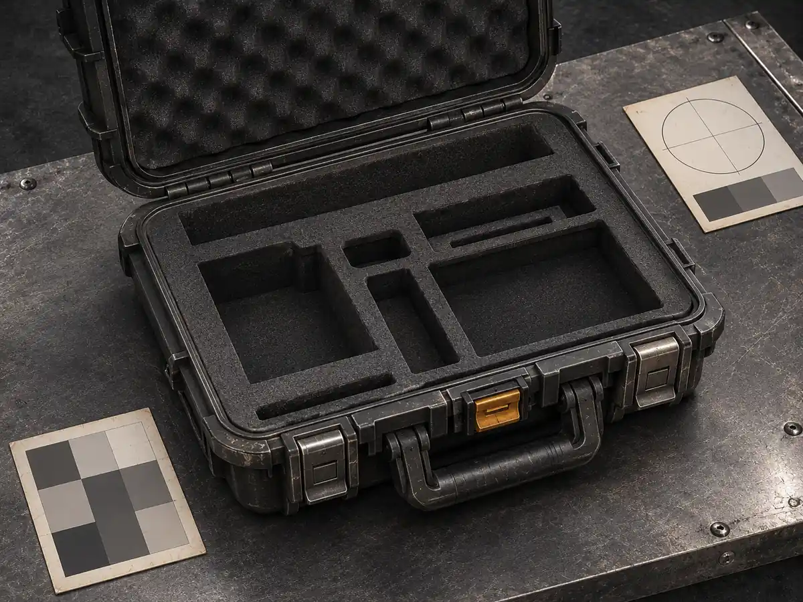

No. 01Watches
The Watch That Became Standard Issue
The Watch That Became Standard Issue
Survival record
Open technical log
The Watch That Became Standard Issue
No. 02Watches
The Watch That Brought Apollo 13 Home
The Watch That Brought Apollo 13 Home
Survival record
Open technical log
The Watch That Brought Apollo 13 Home
No. 03Watches
The Private Watch Worn on the Moon
On Apollo 15, the Speedmaster crystal popped off during the second lunar walk. Commander David Scott switched to his own Bulova Chronograph Model 88510/01, a prototype, never produced for sale.
Survival record
Open technical log
- N A S A i s s u e d e v e r y A p o l l o a s t r o n a u t a s t a n d a r d O m e g a S p e e d m a s t e r P r o f e s s i o n a l , g o v e r n m e n t p r o p e r t y . - D u r i n g A p o l l o 1 5 ' s s e c o n d l u n a r e x c u r s i o n , t h e c r y s t a l o n D a v i d S c o t t ' s i s s u e d S p e e d m a s t e r p o p p e d o f f . - F o r t h e t h i r d l u n a r w a l k , S c o t t u s e d h i s o w n B u l o v a C h r o n o g r a p h M o d e l 8 8 5 1 0 / 0 1 , g i v e n t o h i m b y B u l o v a a s a p r o t o t y p e . - T h e w a t c h s h o w s s i g n i f i c a n t w e a r f r o m e x p o s u r e o n t h e M o o n , s p l a s h d o w n , a n d r e c o v e r y . - A p o l l o 1 5 l a u n c h e d 2 6 J u l y 1 9 7 1 f r o m K e n n e d y L C - 3 9 A o n S a t u r n V S A - 5 1 0 ; l a n d e d a t H a d l e y - A p e n n i n e o n 3 0 J u l y 1 9 7 1 . - T h e B u l o v a C h r o n o g r a p h 8 8 5 1 0 / 0 1 i s t h e o n l y p r i v a t e l y o w n e d w a t c h t o h a v e b e e n w o r n o n t h e l u n a r s u r f a c e . - I t s o l d a t R R A u c t i o n i n B o s t o n i n O c t o b e r 2 0 1 5 f o r $ 1 . 6 2 5 m i l l i o n .
No. 04Watches
Grand Seiko Accuracy: The 44GS Design That Endures
Grand Seiko began in 1960 as Seiko's highest-grade domestic watch line, introduced in December 1960 by Suwa Seikosha with the hand-wound calibre 3180. Its design is associated with the angular case and dial conventions of the 1967 44GS and, since 2020, the related Evolution 9 design code.
Survival record
Open technical log
G r a n d S e i k o b e g a n i n 1 9 6 0 a s S e i k o ' s h i g h e s t - g r a d e d o m e s t i c w a t c h l i n e . I n 2 0 1 7 S e i k o b e g a n p r e s e n t i n g i t a s a s e p a r a t e b r a n d , r e m o v i n g t h e S e i k o n a m e f r o m n e w d i a l s w h i l e r e t a i n i n g t h e s a m e c o r p o r a t e o w n e r s h i p .
No. 05Optics
The Camera That Survived a Helicopter Drop and Six Months Buried
The Leica M3 survived being dropped from a helicopter, buried in mud for 6 months, and used as a hammer to drive tent stakes, and the images developed perfectly.
Survival record
Open technical log
In 1962, photojournalist Don McCullin dropped his Leica M3 from a helicopter at 300 feet in Vietnam. The camera landed in rice paddy mud. He retrieved it 6 months later. The mud had sealed the body. He cleaned it, loaded film, and shot the Battle of Hue with it. In 1968, at the Siege of Khe Sanh, McCullin used the same M3 to drive tent stakes into frozen ground when his hammer was lost. The M3's all-brass, all-steel construction with zero electronics meant mud, water, shock, and temperature extremes could not disable it. Leica's 1954 tolerances of 0.001mm meant the rangefinder remained calibrated after helicopter drop, mud burial, and hammer use. The images from Khe Sanh, shot on that same M3, won the 1969 World Press Photo of the Year. Leica's 1954 marketing claimed "precision that survives the user." The M3 proved it. Original 1954 M3s still function perfectly today, 70 years later, with only routine CLA service.
No. 06Field Tools
The Case That Survived a 200-Foot Drop, Submersion and Fire
The Pelican 1650 case survived the US Military's MIL-STD-810G torture suite in 2018. It protected a Raspberry Pi 4, SSD, and LiPo battery through a 200-foot drop, 100-meter submersion, and 2000°F fire.
Survival record
Open technical log
Test 1: 200-foot drop onto concrete (MIL-STD-810G Method 516.7). The case bounced, the O-ring held, contents intact. Test 2: 100-meter submersion for 24 hours (MIL-STD-810G Method 512.6). The automatic pressure equalization valve prevented vacuum lock, O-ring held. Test 3: 2000°F fire exposure for 30 minutes (MIL-STD-810G Method 510.6). The copolymer polypropylene case charred but the foam liner carbonized into an insulating layer, protecting contents.
No. 07Watches
The Watch That Went 10,898 Meters Down on a Robot Arm
The Rolex Deepsea Challenge prototype was strapped to the manipulator arm of the DSV Deepsea Challenger and functioned precisely at 10,898 metres at the bottom of the Challenger Deep, and the 2022 commercial reference 126067 carries an official depth rating of 11,000 metres tested to 13,750 metres for the 25 percent ISO 6425 safety reserve.
Survival record
Open technical log
On 26 March 2012, the DSV Deepsea Challenger carried a Rolex Oyster Perpetual Date Sea-Dweller DEEPSEA CHALLENGE prototype strapped to its manipulator arm to a depth of 10,898 metres. The experimental watch was designed to be waterproof up to 12,000 metres and featured a domed synthetic sapphire crystal 14.3 millimetres thick. James Cameron stated the watch was the reliable companion throughout the dive, visible on the sub's manipulator arm and working precisely at 10,898 metres down at the bottom of the Challenger Deep. In November 2022 Rolex introduced the commercial Deepsea Challenge reference 126067 with an official depth rating of 11,000 metres, tested to 13,750 metres for the 25 percent safety reserve required by the ISO 6425 divers' watches standard. The commercial watch case is grade 5 titanium alloy, 50.0 millimetres in diameter, 23.0 millimetres thick, with a domed crystal 9.5 millimetres thick, and the case and bracelet weigh 251 grams. The Deepsea models use Rolex's patented Ringlock system designed to provide a higher degree of pressure resistance.
No. 08Watches
The Watch SOG Paid Its Fighters For Taking Prisoners
MACV-SOG created a reward system that prioritized capturing enemy soldiers as a secondary objective by offering Seiko watches, cash bonuses, and R&R trips to team members. This incentive structure produced actionable intelligence on PAVN troop movements while remaining secret until the early 1980s.
Survival record
Open technical log
Teams also received rewards including free R&R trips to Taiwan or Thailand aboard a SOG C-130 Blackbird, a $100 bonus for each American, and a new Seiko watch and cash to each indigenous member. No matter the team's primary mission, capturing enemy soldiers always remained the team's secondary mission when the opportunity presented itself due to valuable intelligence gained related to PAVN troop movements, size, and base locations. Beginning in 1966, SOG conducted prisoner snatch missions of PAVN soldiers behind enemy lines along the Ho Chi Minh Trail.
No. 09Watches
Why the Omega Speedmaster Survived NASA's Torture Test
The Speedmaster endured because a racing chronograph became a mechanically resilient instrument before NASA ever trusted it in space.
Survival record
Open technical log
- O m e g a i n t r o d u c e d t h e S p e e d m a s t e r i n 1 9 5 7 a s a s p o r t a n d r a c i n g c h r o n o g r a p h , n o t a s p a c e w a t c h . - W a l t e r S c h i r r a w o r e h i s p e r s o n a l C K 2 9 9 8 d u r i n g M e r c u r y - A t l a s 8 o n O c t o b e r 3 , 1 9 6 2 . - N A S A t e s t e d c o m p e t i n g m e c h a n i c a l h a n d - w o u n d c h r o n o g r a p h s t h r o u g h h e a t , c o l d , v a c u u m , h u m i d i t y , o x y g e n , s h o c k , v i b r a t i o n , p r e s s u r e , a n d a c o u s t i c n o i s e . - T h e e v a l u a t i o n c o n c l u d e d i n M a r c h 1 9 6 5 w i t h t h e S p e e d m a s t e r s e l e c t e d a f t e r s u r v i v i n g w h i l e r e m a i n i n g l a r g e l y w i t h i n 5 s e c o n d s p e r d a y . - G u s G r i s s o m a n d J o h n Y o u n g w o r e t h e f i r s t o f f i c i a l l y q u a l i f i e d S p e e d m a s t e r s o n G e m i n i 3 o n M a r c h 2 3 , 1 9 6 5 .
No. 10Watches
TAG Heuer Accuracy: The Oscillating Pinion That Endures
TAG Heuer's slogan is "Swiss Avant-Garde Since 1860", a line rooted in the 1860 founding of Heuer Watchmaking Inc. by Edouard Heuer in St-Imier, Switzerland. Heuer's patents included the first chronograph in 1882, the oscillating pinion in 1887, and the "Time of Trip" in 1911, the first dashboard chronograph.
Survival record
Open technical log
I n 1 9 1 1 , H e u e r r e c e i v e d a p a t e n t f o r t h e " T i m e o f T r i p " , t h e f i r s t d a s h b o a r d c h r o n o g r a p h . T h e d e s i g n u s e d t w o l a r g e h a n d s f r o m t h e c e n t e r p i n i o n f o r t h e t i m e o f d a y a n d a s m a l l p a i r o f h a n d s a t t h e t w e l v e o ' c l o c k p o s i t i o n f o r t r i p d u r a t i o n u p t o t w e l v e h o u r s .
No. 11Field Tools
The Knife Switzerland Gives Every Soldier
The Swiss Army has issued the same Soldier Knife to every soldier regardless of rank since the nineteenth century. The supply chain evolved from initial German production to a dual domestic supplier system that eventually consolidated into a single manufacturer.
Survival record
Open technical log
Soldier Knives are issued to every recruit or member of the Swiss Armed Forces and the knives issued to officers have never differed from those issued to non-commissioned officers and privates. At that time no Swiss company had the necessary production capacity so the initial order for 15,000 knives was placed with the German knife manufacturer Wester & Co. of Solingen Germany and these knives were delivered in October 1891. On 26 April 2005 Victorinox acquired Wenger becoming the sole supplier of knives to the military of Switzerland.
No. 12Optics
The Camera Company That Hid $1.7 Billion in Losses
The Camera Company That Hid $1.7 Billion in Losses
Survival record
Open technical log
The Camera Company That Hid $1.7 Billion in Losses
No. 13Watches
The Watch That Came Back From 3,900 Feet Underwater
The Watch That Came Back From 3,900 Feet Underwater
Survival record
Open technical log
The Watch That Came Back From 3,900 Feet Underwater